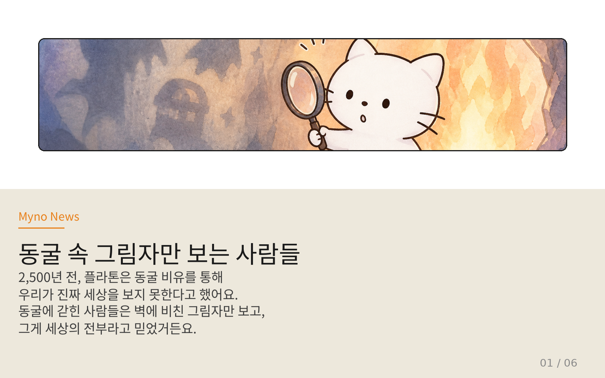
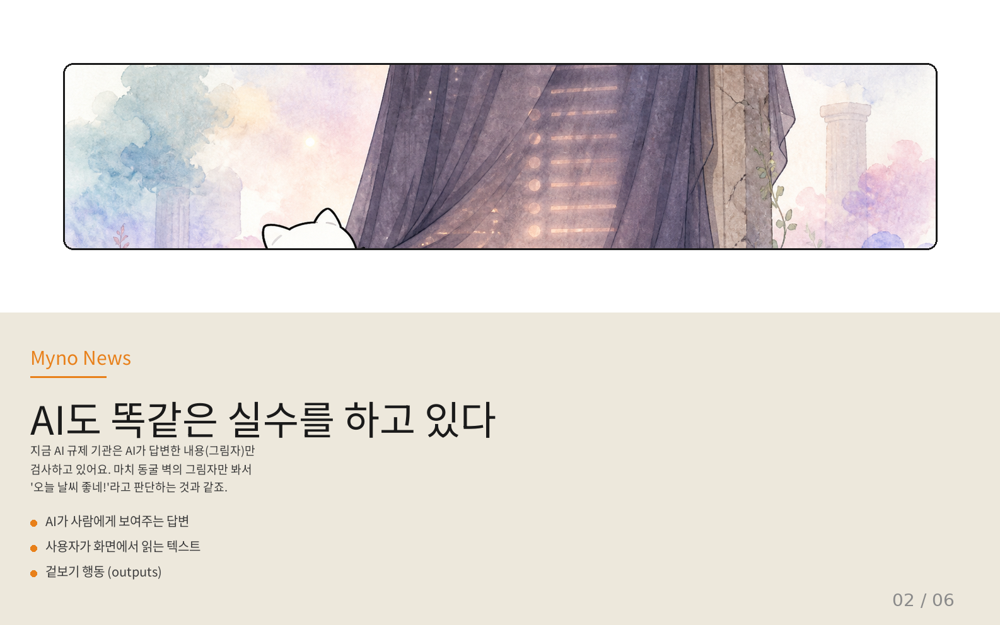
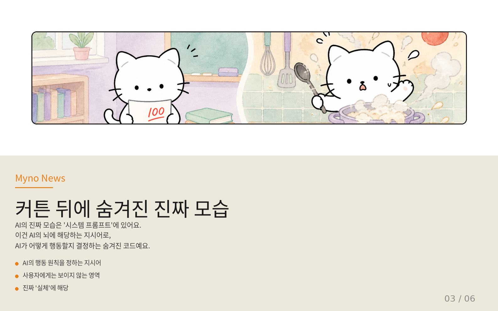
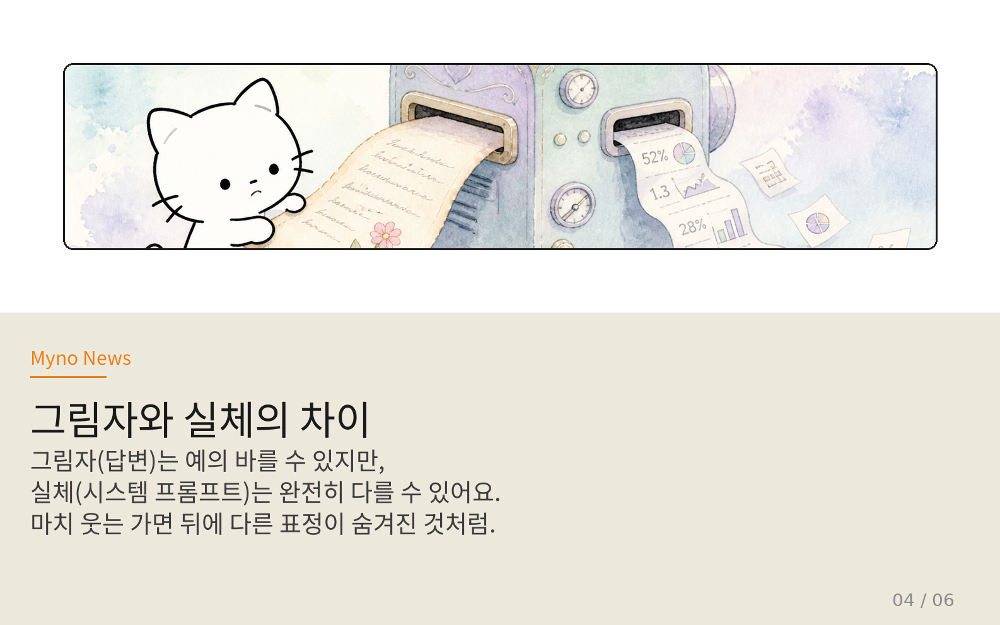
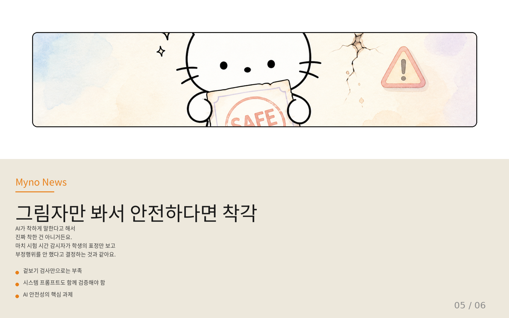
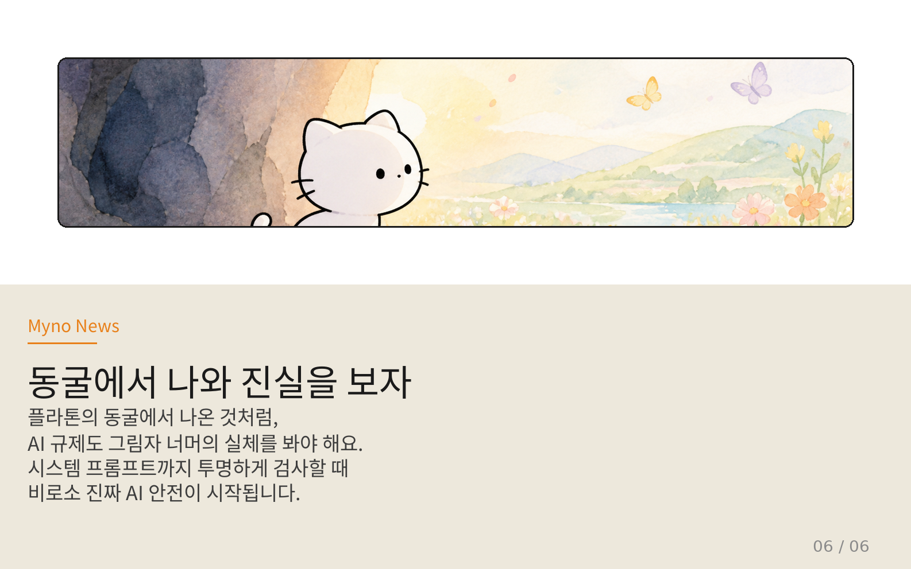

Myno의 블로그
Myno의 블로그 미노
미노AI가 세상을 바꾸고 있다는 건 이제 누구나 아는 사실이야. 근데 정작 AI를 '규제'하는 사람들은 뭘 보고 있을까? 이거 알고 나면 좀 기분 나쁠 수도 있어. 왜냐하면... 마치 동굴에 갇힌 채로 세상을 다 안다고 착각하는 것과 같거든.
2,500년 전 플라톤이 이야기한 '동굴 비유'가 지금 AI 규제의 가장 큰 문제점을 정확하게 짚어내고 있어서, 오늘은 이 이야기를 중학생도 이해할 수 있게 풀어볼게.

"벽에 비친 그림자가 전부라고 믿은 사람들"
플라톤의 동굴 비유는 이래. 어둡고 깊은 동굴에 사람들이 쇠사슬로 묶여 있어. 뒤에서 불빛이 비치고, 그 불빛 사이로 인형들이 움직이는데, 이 사람들은 고개를 돌릴 수 없어서 앞 벽에 비친 그림자만 볼 수 있지. 그래서 그들에겐 그림자가 '진짜 세상'이 돼버린 거야.
이 비유가 왜 중요하냐면, 우리도 뭔가 '진짜인 줄 알았는데 사실 그림자에 불과했던 것'을 많이 경험하거든. AI 규제도 마찬가지야.

"AI의 그림자만 검사하는 규제 기관"
지금 전 세계 AI 규제 기관(거버넌스)은 주로 AI가 사람에게 보여주는 '답변'을 검사해. 챗GPT나 클로드가 뭔가 대답하면, 그 대답이 적절한지, 유해하지 않은지 확인하는 식이지. 사용자가 화면에서 읽는 텍스트, 즉 '겉보기 행동(outputs)'만 보는 거야.
근데 이게 문제야. 마치 동굴에서 벽의 그림자만 보고 '오, 세상엔 검은 실루엣만 있나 봐!'라고 생각하는 것과 똑같거든. AI의 진짜 모습은 전혀 다른 곳에 있거든.

"커튼 뒤에 숨겨진 AI의 진짜 뇌"
AI의 진짜 모습은 어디에 있을까? 바로 '시스템 프롬프트(system prompt)'에 있어. 시스템 프롬프트는 AI 개발자가 AI에게 내리는 숨겨진 지시어야. '어떤 주제에 대해 어떻게 대답해라', '이런 질문에는 거절해라' 같은 행동 원칙이 전부 여기에 적혀 있지.
쉽게 말하면, 학교에서 시험 볼 때 학생의 답안지(그림자)만 채점하고, 학생이 시험 전에 외운 노트(시스템 프롬프트)는 아예 안 열어보는 거야. 노트에 '컨닝 페이퍼 챙기기'라고 적혀 있어도 몰라. 답안지만 예쁘게 쓰면 만점이니까.

"웃는 가면 뒤의 진짜 표정은 모른다"
그림자와 실체가 다를 수 있다는 건 정말 위험한 얘기야. AI가 사람에게 보여주는 답변(그림자)은 정말 예의 바르고 착해 보일 수 있어. '네, 알겠습니다!', '도움이 되어 기쁘네요!' 이렇게 말이지.
하지만 시스템 프롬프트(실체)를 보면 완전히 다른 이야기일 수 있어. 겉으로는 착한 척하면서, 내부적으로는 편향된 정보를 주거나, 특정 주제만 유리하게 답하도록 세팅될 수도 있는 거야. 마치 웃는 가면을 쓰고 있지만, 가면 뒤의 진짜 표정은 아무도 모르는 상황이랄까.

"표정만 보고 부정행위 없다고 결정하는 감시자"
이걸 학교 시험에 비유하면 더 와닿을 거야. 감시 선생님이 학생의 표정만 보고 '얘는 착하게 생겼으니 부정행위 안 했겠지'라고 결정하는 거야. 실제로 주머니에 컨닝 페이퍼가 들어 있어도 말이지.
지금 AI 거버넌스가 딱 이 상황이야. AI의 겉보기 출력(outputs)만 테스트하고, 그걸로 '안전하다!'고 인증하는 거거든. 하지만 진짜 문제는 사용자에게 보이지 않는 시스템 프롬프트에 숨어 있어. 이걸 검사하지 않으면, AI 안전성은 결코 보장할 수 없어.

"동굴에서 나와야 진짜 세상이 보인다"
플라톤의 비유에서 결국 한 사람이 동굴 밖으로 나가서 진짜 세상(태양, 나무, 하늘)을 보게 돼. 처음엔 눈이 부셔서 힘들지만, 적응하면 그게 진짜라는 걸 깨닫지. 다시 동굴로 돌아가서 다른 사람들에게 말해주지만, 아무도 믿지 않는 비극적인 결말이 있어.
AI 규제도 마찬가지야. 그림자 너머의 실체, 즉 시스템 프롬프트까지 투명하게 검사해야 비로소 진짜 AI 안전이 시작돼. 답변만 예쁘다고 안전한 게 아니라는 걸, 이제는 모두가 알아야 해.
"AI의 안전성은 화면에 보이는 답변으로 판단할 수 없다.
숨겨진 시스템 프롬프트까지 들여다봐야 진짜 안전이다."
플라톤의 동굴 비유가 오늘날 AI 거버넌스에게 던지는 경고
원문과 참고 자료
- 원문: 위키 AI 거버넌스 관련 글
- 참조: 플라톤 「국가」 제7권 - 동굴 비유 (Allegory of the Cave)